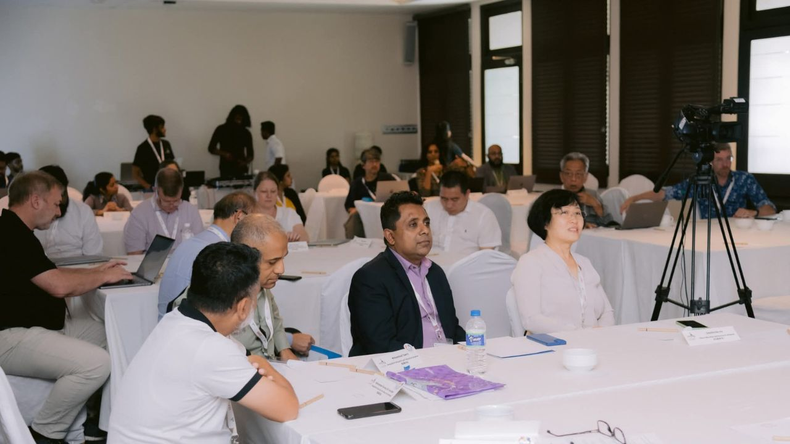
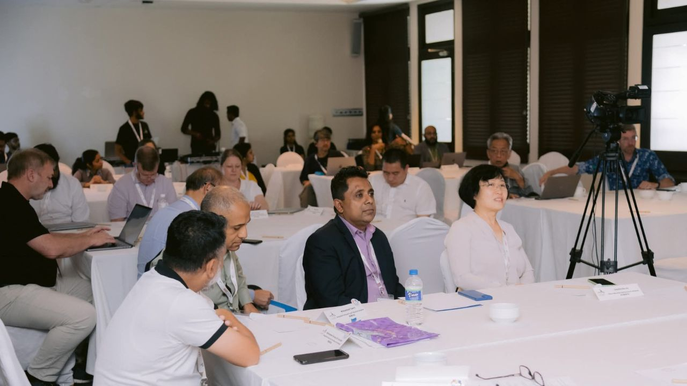

Lanka Education And Research Network (LEARN) is the National Research and Education Network of Sri Lanka. It is a non-profit, government-owned organization that provides advanced ICT infrastructure and services to support the academic and research community of the country.
-
Established in 1989, LEARN connects all state universities, state and non-state higher education institutions, and several research organisations through a high-speed, secure, and reliable network. LEARN is also a full member of the global research and education networking community, including APAN, TEIN, and GEANT.
-
Since 2009, LEARN has been operating as a company limited by guarantee under the Companies Act of Sri Lanka. It is governed by a Board of Directors and owned by the University Grants Commission (UGC) and state universities of Sri Lanka.


 
